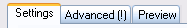

Password Generator
Details about the built-in password generator of KeePass.
|
| Password GeneratorDetails about the built-in password generator of KeePass. |
 Generation
Based on Character Sets
Generation
Based on Character SetsThis password generation method is the recommended way to generate random passwords. Other methods (pattern-based generation, ...) should only be used if passwords must follow special rules or fulfill certain conditions.
Generation based on a character set is very simple. You simply let KeePass know which characters can be used (e.g. upper-case letters, digits, ...) and KeePass will randomly pick characters out of the set.
Defining a Character Set:
The character set can be defined directly in the password generator window. For convenience,
KeePass offers adding commonly used ranges of characters to the set. This is done by
ticking the appropriate check box. Additionally to these predefined character ranges, you
can specify characters manually: all characters that you enter in the 'Also include the
following characters' text box will be directly added to the character set.
The characters that you enter in the 'Also include the following characters' text box are included in the character set from which the password generator randomly chooses characters from. This means that these additional characters are allowed to appear in the generated passwords, but they are not forced to. If you want to force that some characters appear in the generated passwords, you have to use the pattern-based generation.
Character Sets are Sets:
In mathematical terms, character sets are sets, not vectors. This means that characters
cannot be added twice to the set. Either a character is in the set or it is not.
For example, if you enter 'AAAAB' into the additional characters box, this is exactly the same set as 'AB'. 'A' will not be 4 times as likely as 'B'! If you need to follow rules like 'character A is more likely than B', you must use pattern-based generation + permuting password characters.
KeePass will 'optimize' your character set by removing all duplicate characters. If you'd enter the character set 'AAAAB' into the additional characters box, close and reopen the password generator, it'll show the shorter character set 'AB'. Similarly, if you tick the Digits check box and enter '3' into the additional box, the '3' will be ignored because it is already included in the Digits character range.
Generation
Based on PatternsThe password generator can create passwords using patterns. A pattern is a string defining the layout of the new password. The following placeholders are supported:
| Placeholder | Type | Character Set |
|---|---|---|
a |
Lower-Case Alphanumeric | abcdefghijklmnopqrstuvwxyz 0123456789 |
A |
Mixed-Case Alphanumeric | ABCDEFGHIJKLMNOPQRSTUVWXYZ abcdefghijklmnopqrstuvwxyz 0123456789 |
U |
Upper-Case Alphanumeric | ABCDEFGHIJKLMNOPQRSTUVWXYZ 0123456789 |
d |
Digit | 0123456789 |
h |
Lower-Case Hex Character | 0123456789 abcdef |
H |
Upper-Case Hex Character | 0123456789 ABCDEF |
l |
Lower-Case Letter | abcdefghijklmnopqrstuvwxyz |
L |
Mixed-Case Letter | ABCDEFGHIJKLMNOPQRSTUVWXYZ abcdefghijklmnopqrstuvwxyz |
u |
Upper-Case Letter | ABCDEFGHIJKLMNOPQRSTUVWXYZ |
v |
Lower-Case Vowel | aeiou |
V |
Mixed-Case Vowel | AEIOU aeiou |
Z |
Upper-Case Vowel | AEIOU |
c |
Lower-Case Consonant | bcdfghjklmnpqrstvwxyz |
C |
Mixed-Case Consonant | BCDFGHJKLMNPQRSTVWXYZ bcdfghjklmnpqrstvwxyz |
z |
Upper-Case Consonant | BCDFGHJKLMNPQRSTVWXYZ |
p |
Punctuation | ,.;: |
b |
Bracket | ()[]{}<> |
s |
Printable 7-Bit Special Character | !"#$%&'()*+,-./:;<=>?@[\]^_`{|}~ |
S |
Printable 7-Bit ASCII | A-Z, a-z, 0-9, !"#$%&'()*+,-./:;<=>?@[\]^_`{|}~ |
x |
High ANSI | Range [U+0080, U+00FF] except control and non-printable characters. |
\ |
Escape (Fixed Char) | Use following character as is. |
{n} |
Escape (Repeat) | Repeat the previous character n times. |
[...] |
Custom Char Set | Define a custom character set. |
The \ placeholder is special: it's an escape character. The next character that follows
the \ is written directly into the generated password. If you want a \ in your
password at a specific place, you have to write \\.
Using the {n} code you can define how many times the previous placeholder
should occur. The { } operator duplicates placeholders, not generated characters. Examples:
» d{4} is equivalent to dddd,
» dH{4}a is equivalent to dHHHHa and
» Hda{1}dH is equivalent to HdadH.
The [...] notation can be used to define a custom character set, from which
the password generator will pick one character randomly. All characters between the '['
and ']' brackets follow the same rules as the placeholders above.
The '^' character removes the next character from the character set.
Examples:
» [dp] generates exactly 1 random character out of the set
digits + punctuation,
» [d\m\@^3]{5} generates 5 characters out of the set "012456789m@",
» [u\_][u\_] generates 2 characters out of the set upper case + '_'.
More examples:
ddddd
Generates for example: 41922, 12733, 43960, 07660, 12390, 74680, ...
\H\e\x\:\ HHHHHH
Generates for example: 'Hex: 13567A', 'Hex: A6B99D', 'Hex: 02243C', ...
Common Password Patterns:
| Name | Pattern |
|---|---|
| Hex Key - 40-Bit | h{10} |
| Hex Key - 128-Bit | h{32} |
| Hex Key - 256-Bit | h{64} |
| Random MAC Address | HH\-HH\-HH\-HH\-HH\-HH |
Generating
Passwords that Follow RulesBelow are a few examples how the pattern generation feature can be used to generate passwords that follow certain rules.
Important! For all of the following examples you must enable the 'Randomly permute characters of password' option!
| Rule | Pattern |
|---|---|
| Must consist of 2 upper case, 2 lower case characters and 2 digits | uulldd |
| Must consist of 9 digits and 1 letter | d{9}L |
| Must consist of 10 alphanumeric characters, where at least 1 is a letter and at least 1 is a digit | LdA{8} |
| Must consist of 10 alphanumeric characters, where at least 2 are upper case and at least are 2 lower case characters | uullA{6} |
| Must consist of 9 characters out of the set "ABCDEF" and an '@' symbol somewhere in it | \@[\A\B\C\D\E\F]{9} |
Security-Reducing
OptionsThe password generator supports several options like 'Each character must occur at most once', 'Exclude look-alike characters', and a field to explicitly specify characters that should not appear in generated passwords.
These options are reducing the security of generated passwords. You should only enable them if you are forced to follow such rules by the website/application, for which you are generating the password.
The options can be found in the 'Advanced' dialog / tab page.
 If you enable a security-reducing option, an exclamation mark (!) Creating
and Using Password Generator ProfilesPassword generator options (character set, length, pattern, ...) can be saved as password generator profiles.
Creating/Modifying a Profile:
 Save as Profile button.
Save as Profile button.Using a Profile:
To use a profile, simply select it from the drop-down profiles list in the password generator window. All settings of this profile will be restored accordingly.
Configuring Settings
of Automatically Generated Passwords for New EntriesWhen you create a new entry, KeePass will automatically generate a random password for it. The properties of these generated passwords can be configured in the password generator dialog.
To configure, specify the options of your choice and overwrite the '(Automatically generated passwords for new entries)' profile (see section above).
Disabling Automatically Generated Passwords:
To disable automatically generated passwords for new entries, select
'Generate using character set' and specify 0 as password length.
Overwrite the appropriate profile (see above).